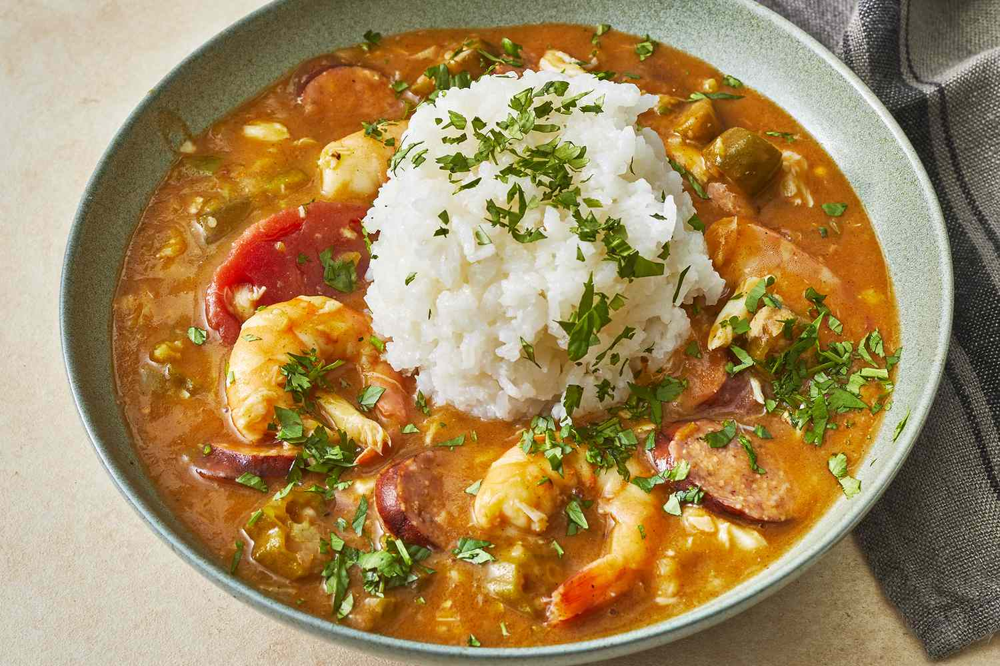

Gumbo

Description
Gumbo is a delicious chicken and sausage stew.
Ingredients
- 1 small green bell pepper, diced
- 2 ribs celery, diced
- 1 small white onion, diced
- 6 garlic cloves, minced
Steps
- Take 1 small green bell pepper, 2 ribs of celery, and 1 small white onion (also known as the “holy trinity”)
and dice them into medium-sized pieces. Set aside for later.
- Mince 6 garlic cloves and set aside for later.
- For the roux, add ½ cup of vegetable oil to a pot and allow it to get smoking hot before adding ½ cup of all
purpose flour. Using a wooden spoon or preferably a whisk, mix together until the consistency is similar to
wet sand.
- Within 30 seconds, the roux should be the color of milk chocolate. The darker the roux gets, the more you
need to stir it, but let it sit for a few seconds before continuing to stir. After about 5-6 minutes, the
color of the roux should be nice and dark or similar to the color of a Hershey's chocolate bar. Set aside
some of the roux to use later.